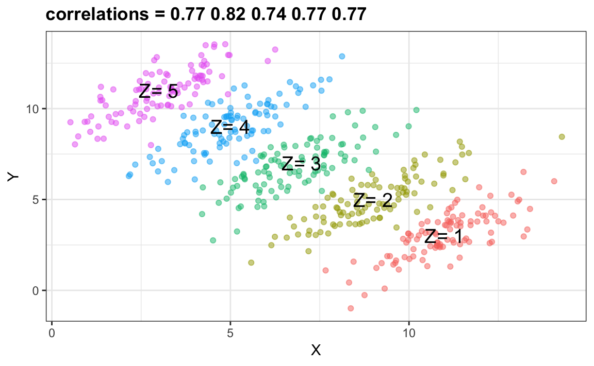

Chapter 63 Simpson’s Paradox
The case we have just covered is an example of Simpson’s Paradox. It is called a paradox because we see the sign of the correlation flip when comparing the entire publication and specific strata. The following is an illustrative example. Suppose you have three variables \(X\), \(Y\) and \(Z\). Here is a scatterplot of \(Y\) versus \(X\):
You can see that \(X\) and \(Y\) are negatively correlated. However, once we stratify by \(Z\) (shown in different colors), which we have not yet shown, another pattern emerges:

It is really \(Z\) that is negatively correlated with \(X\). If we stratify by \(Z\), the \(X\) and \(Y\) are actually positively correlated as seen in the plot above.
63.0.1 Case study: research funding success in The Netherlands
Let’s examine a similar case to the UC Berkeley admissions example, but one which is much more subtle.
A 2014 PNAS paper analyzed success rates from funding agencies in the Netherlands and concluded that their:
results reveal gender bias favoring male applicants over female applicants in the prioritization of their “quality of researcher” (but not “quality of proposal”) evaluations and success rates, as well as in the language used in instructional and evaluation materials.
The main evidence for this conclusion comes down to a comparison of the percentages. Table S1 in the paper includes the information we need:
#> discipline applications_total applications_men
#> 1 Chemical sciences 122 83
#> 2 Physical sciences 174 135
#> 3 Physics 76 67
#> 4 Humanities 396 230
#> 5 Technical sciences 251 189
#> 6 Interdisciplinary 183 105
#> 7 Earth/life sciences 282 156
#> 8 Social sciences 834 425
#> 9 Medical sciences 505 245
#> applications_women awards_total awards_men awards_women
#> 1 39 32 22 10
#> 2 39 35 26 9
#> 3 9 20 18 2
#> 4 166 65 33 32
#> 5 62 43 30 13
#> 6 78 29 12 17
#> 7 126 56 38 18
#> 8 409 112 65 47
#> 9 260 75 46 29
#> success_rates_total success_rates_men success_rates_women
#> 1 26.2 26.5 25.6
#> 2 20.1 19.3 23.1
#> 3 26.3 26.9 22.2
#> 4 16.4 14.3 19.3
#> 5 17.1 15.9 21.0
#> 6 15.8 11.4 21.8
#> 7 19.9 24.4 14.3
#> 8 13.4 15.3 11.5
#> 9 14.9 18.8 11.2We can construct the two-by-two table used for the conclusion above:
two_by_two <- research_funding_rates %>%
select(-discipline) %>%
summarize_all(funs(sum)) %>%
summarize(yes_men = awards_men,
no_men = applications_men - awards_men,
yes_women = awards_women,
no_women = applications_women - awards_women) %>%
gather %>%
separate(key, c("awarded", "gender")) %>%
spread(gender, value)
two_by_two
#> awarded men women
#> 1 no 1345 1011
#> 2 yes 290 177We can then compute the difference in percentage:
two_by_two %>%
mutate(men = round(men/sum(men)*100, 1), women = round(women/sum(women)*100, 1)) %>%
filter(awarded == "yes")
#> awarded men women
#> 1 yes 17.7 14.9Notice that the success rate is lower for women with a p-valeu slightly higher than 0.05:
two_by_two %>% select(-awarded) %>% chisq.test() %>% tidy
#> statistic p.value parameter
#> 1 3.81 0.0509 1
#> method
#> 1 Pearson's Chi-squared test with Yates' continuity correctionSo there appears to be some evidence of an association. But can we infer causation here? Is gender bias causing this observed difference?
A response was published a few months later titled No evidence that gender contributes to personal research funding success in The Netherlands: A reaction to Van der Lee and Ellemers which concluded:
However, the overall gender effect borders on statistical significance, despite the large sample. Moreover, their conclusion could be a prime example of Simpson’s paradox; if a higher percentage of women apply for grants in more competitive scientific disciplines (i.e., with low application success rates for both men and women), then an analysis across all disciplines could incorrectly show “evidence” of gender inequality.
In the UC Berkeley admissions example, the overall differences were explained by difference across disciplines. We use the same approach on the research funding data and look at comparisons by discipline:
dat <- research_funding_rates %>%
rename(success_total = success_rates_total,
success_men = success_rates_men,
success_women = success_rates_women) %>%
gather(key, value, -discipline) %>%
separate(key, c("type", "gender")) %>%
spread(type, value) %>%
filter(gender != "total") %>%
mutate(discipline = reorder(discipline, applications, sum))
dat %>%
ggplot(aes(discipline, success, size = applications, color = gender)) +
theme(axis.text.x = element_text(angle = 90, hjust = 1)) +
geom_point()
We do not see the same level of confounding as in the UC Berkeley example. We do see that some fields favor men and other women and we do see that the two fields with the largest difference favoring men, are also the fields with the most applications. But unlike the UC Berkeley examples, women are not more likely to apply for the harder subjects.
So perhaps some of the selection committees are biased and others are not.
However, are any of the differences seen above statistically significant? Keep in mind that even when there is no bias, we will see differences due to random variability in the review process as well as random variability across candidates. If we perform a Fisher test in each discipline, we see that most differences result in p-values larger than 0.05.
do_fisher_test <- function(m, x, n, y){
tab <- tibble(men = c(x, m-x), women = c(y, n-y))
tidy(fisher.test(tab)) %>%
rename(odds = estimate) %>%
mutate(difference = y/n - x/m)
}
res <- research_funding_rates %>%
group_by(discipline) %>%
do(do_fisher_test(.$applications_men, .$awards_men,
.$applications_women, .$awards_women)) %>%
ungroup() %>%
select(discipline, difference, p.value) %>%
arrange(difference)
res
#> # A tibble: 9 x 3
#> discipline difference p.value
#> <chr> <dbl> <dbl>
#> 1 Earth/life sciences -0.101 0.0367
#> 2 Medical sciences -0.0762 0.0175
#> 3 Physics -0.0464 1
#> 4 Social sciences -0.0380 0.127
#> 5 Chemical sciences -0.00865 1
#> 6 Physical sciences 0.0382 0.651
#> # ... with 3 more rowsFor Earth/Life Sciences, there is a difference of 10% favoring men and this has a p-value of 0.04. But is this a spurious correlation? We performed 9 tests. Reporting only the one case with a p-value less than 0.05 might be considered an example of cherry picking.
Note als that the overall average of the difference is only -0.3%, which is much smaller than the standard error:
res %>% summarize(overall_avg = mean(difference),
se = sd(difference)/sqrt(n()))
#> # A tibble: 1 x 2
#> overall_avg se
#> <dbl> <dbl>
#> 1 -0.00311 0.0226Furthermore, the differences appear to follow a normal distribution:
res %>% ggplot(aes(sample = scale(difference))) + stat_qq() + geom_abline()
which suggests the there is a possibility that the observed differences are just due to chance.
Unlike the UC Berkeley case, there seems to be reasons for concern here at least for some disciplines. However, the statistical evidence is borderline and we probably want to recommend further investigation before concluding there is bias.